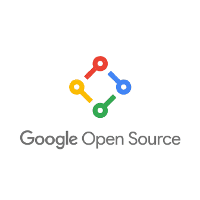

[1] "Thank you! What Questions Do You Have?"Introduction to Open Code
History of computing


A simple way of getting started to share your code
Ideally, you have been commiting code and software to git and Github as the project evolves.
If not:

- Get a github account (Learn how to use git).
- Make sure your code/software is coherently structured, and well documented.
- Upload code/software to Github.
- Create a short Readme.md, describing the project and the execution of the code.
- Add license.
- Optional: Share your data if possible (if not, only share code).
- Example
When Not to Share
There are valid reasons that restrict a researcher’s ability to share their complete code or software. Some of these reasons may include:
The code contains personal data.
The code incorporates a country’s military secrets or its dissemination violates national interests or security concerns.
The code incorporates intellectual property or patented data and information.
Institutional policies or organizational regulations do not permit the sharing of code.
 This illustration is created by Scriberia with The Turing Way community, used under a CC-BY 4.0 licence. DOI: 10.5281/zenodo.3332807
This illustration is created by Scriberia with The Turing Way community, used under a CC-BY 4.0 licence. DOI: 10.5281/zenodo.3332807
Software repositories
 |
 |
 |
|
| Software Heritage | Open Source Development Network (OSDN) | SourceForge | Free and Open-Source Software Hub (FOSSHUB) |
|  |  |
 |
|
| Googlecode | Comprehensive Perl Archive Network | PyPl | CRAN |